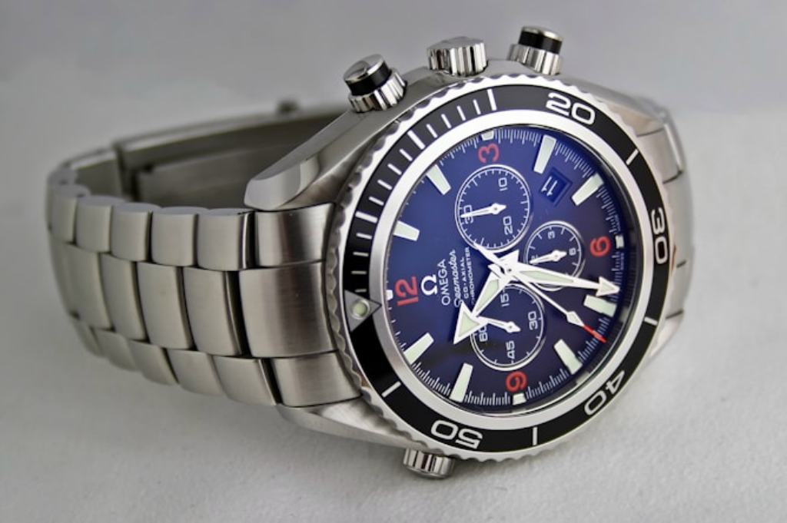

MPX đồng hành cùng INNOEX 2024

Khi bước vào thế giới thời gian, một trong những câu hỏi đầu tiên và cũng là sự lựa chọn khó khăn nhất đối với người mua chính là: "Nên chọn đồng hồ cơ hay đồng hồ pin?". Không có cỗ máy nào là tuyệt đối hoàn hảo, bởi mỗi loại đều mang trong mình một sứ mệnh, một sức hút và một câu chuyện chế tác riêng biệt. Cùng Đồng Hồ 24H giải mã hai dòng đồng hồ kinh điển này để tìm ra mảnh ghép hoàn hảo nhất cho cổ tay của bạn.
Đồng Hồ Pin (Quartz): Biểu Tượng Của Sự Chính Xác Và Tiện Dụng
Ra đời vào những năm cuối thập niên 1960, sự xuất hiện của đồng hồ Quartz đã tạo nên một cuộc cách mạng lớn trong ngành công nghiệp tỷ đô này. Cỗ máy này hoạt động dựa trên năng lượng từ một viên pin nhỏ, truyền qua một tinh thể thạch anh (Quartz) để tạo ra nhịp đập liên tục.
Ưu điểm vượt trội:
-
Độ chính xác cao: Đây là thế mạnh lớn nhất của Quartz. Sai số của chúng thường chỉ rơi vào khoảng ±15 đến ±20 giây mỗi tháng.
-
Chi phí bảo dưỡng thấp: Bạn không cần phải lên cót hay lo lắng nếu không đeo vài ngày. Chỉ cần thay pin định kỳ (thường từ 2 đến 3 năm), chiếc đồng hồ sẽ luôn miệt mài hoạt động.
-
Thiết kế gọn nhẹ: Do lược bỏ được nhiều linh kiện cơ khí phức tạp, đồng hồ Quartz thường có thiết kế mỏng, nhẹ và khả năng chống sốc ưu việt hơn.
Điểm hạn chế: Chuyển động của kim giây thường giật từng nhịp (tích tắc). Với những tay chơi đồng hồ lâu năm, Quartz đôi khi thiếu đi "phần hồn" của nghệ thuật cơ khí truyền thống.
Đồng Hồ Cơ (Automatic): Nghệ Thuật Cơ Khí Vượt Thời Gian
Khác hoàn toàn với Quartz, đồng hồ cơ không sử dụng bất kỳ linh kiện điện tử hay viên pin nào. Trái tim của nó là một mê cung hàng trăm chi tiết bánh răng, lò xo và đinh ốc siêu nhỏ được các nghệ nhân lắp ráp hoàn toàn thủ công. Năng lượng hoạt động được sinh ra từ chính chuyển động tự nhiên trên cổ tay của người đeo (thông qua một bánh đà Rotor).
Ưu điểm vượt trội:
-
Giá trị nghệ thuật và di sản: Sở hữu một chiếc đồng hồ cơ là sở hữu một tuyệt tác cơ khí.
-
Chuyển động kim giây mượt mà: Kim giây của đồng hồ cơ không giật từng nhịp mà trôi êm ái trên mặt số, tạo ra một cảm giác thị giác cực kỳ mê hoặc.
-
Tuổi thọ vĩnh cửu: Nếu được lau dầu và bảo dưỡng đúng cách, một cỗ máy Automatic có thể hoạt động bền bỉ qua nhiều thập kỷ, thậm chí truyền từ thế hệ này sang thế hệ khác.
Điểm hạn chế: Sai số của đồng hồ cơ cao hơn (thường từ ±10 đến ±25 giây mỗi ngày). Ngoài ra, nếu bạn không đeo chúng trong khoảng 40 giờ, năng lượng sẽ cạn và bạn phải chỉnh lại giờ, đồng thời chi phí bảo dưỡng định kỳ cũng cao hơn.
Lựa Chọn Nào Tốt Nhất Cho Bạn?
Câu trả lời nằm ở chính phong cách sống của bạn:
-
Hãy chọn Đồng Hồ Pin (Quartz) nếu bạn là một người bận rộn, yêu thích sự thực dụng, tiện lợi và cần một chiếc đồng hồ luôn sẵn sàng chạy chuẩn xác mỗi khi bạn đeo lên tay.
-
Hãy chọn Đồng Hồ Cơ (Automatic) nếu bạn xem đồng hồ không chỉ là công cụ xem giờ mà là một món trang sức khẳng định đẳng cấp, một tác phẩm nghệ thuật thu nhỏ và bạn sẵn sàng dành thời gian để chăm sóc nó.
Dù quyết định của bạn là gì, Đồng Hồ 24H luôn sẵn sàng đồng hành cùng bạn. Khám phá ngay bộ sưu tập đa dạng từ các thương hiệu Thụy Sĩ và Nhật Bản danh tiếng tại website của chúng tôi để tìm ra tri kỷ thời gian của riêng mình!